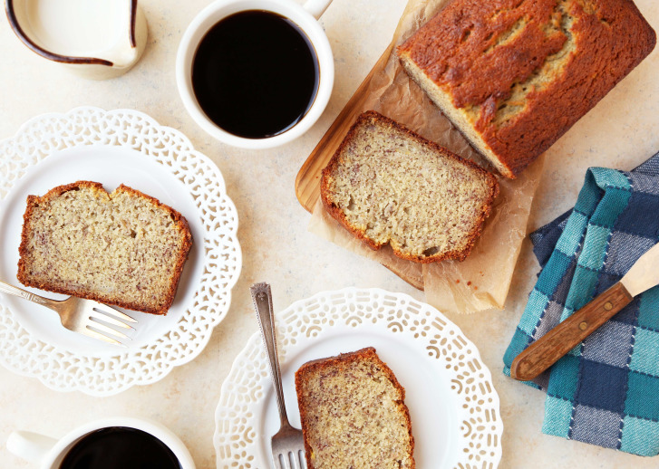

Banana Bread
Photo from Genius Kitchen
There are a ton of recipes for banana bread out there. They all are slightly different in some way, and all claim to be the best. How do you choose? After making this awesome part-breakfast-part-dessert-part-snack dish many times, I will confess that I still don't know! However, I do find myself coming back to the same recipes year after year, and with practice, have understood how to adapt those to my own tastes.
The is the perfect thing to make when you have over-ripe bananas and/or are looking for yummy dessert/breakfast/snack option.
Ingredients
- 1⁄2 cup butter
- 1 cup sugar
- 2 eggs, beaten
- 3 or 4 ripe bananas, finely crushed
- 1 1⁄2 cups flour
- 1 teaspoon baking soda
- 1⁄2 teaspoon salt
- 1⁄2 cup chopped walnuts (optional, and the type of nuts is also up to you)
Instructions
- Preheat oven to 350º.
- Cream together butter and sugar. Add eggs and crushed bananas. Combine well.
- Sift together flour, soda and salt. Add to creamed mixture. Add chopped nuts. Mix just until combined. Do not over mix.
- Pour into greased and floured loaf pan.
- Bake at 350 degrees for 55 minutes. Use a toothpick to check for doneness.
- Remove from oven and cool before removing from pan. Keeps well when refrigerated.